Linda Kaufman
Siam J. Matrix Anal. Appl., Vol. 14, No. 2, pp.372-389, Apri. 1993
1. Introduction
In this paper we consider the generalized eigenvalue problem :
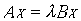
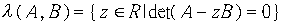
where
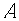
and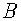
are both symmetric and positive definite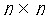
matrices and both are banded with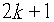
nonzero diagonals. And we can find that if is nonsingular then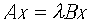
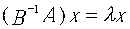
so
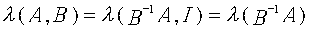
step1. Cholesky factorization of
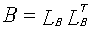
then forming
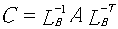
reducing
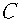
to tridiagonal form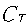
, this step requires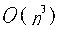
time.
step2. Finding the eigenvalues of the tridiagonal matrix , this step require
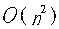
time.This algorithm require time.
The algorithm is based on the theorem of Stewart about the singular value decomposition (SVD) of portions of orthogonal matrix. Consider the Cholesky factorization of and
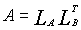
(2.1)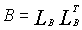
(2.2)and the QR decomposition
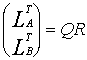
(2.3)where
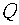
is a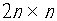
matrix with orthonormal columns,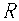
is upper triangular, and nonsingular.Partition into
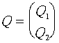
(2.4)from (2.3) and (2.4) we get
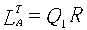
(2.5)and
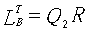
(2.6)If
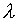
and x satisfy the general eigenvalue problem then from (2.1) and (2.2)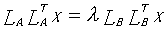
and from (2.5), (2.6) implies
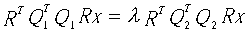
(2.7)the SVD of
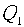
and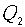
is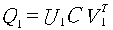
(2.8) (2.9)where
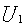
,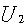
,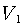
and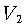
are all orthogonal matrices, and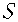
are diagonal matrices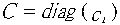
,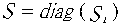
.Then because of the orthogonality of the columns of in (2.3)
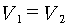
and
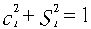
(2.10)we let
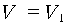
from (2.7), (2.8) and (2.9)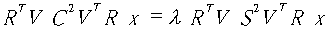
(2.11)letting
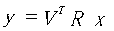
and multiplying both side of (2.11) by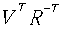
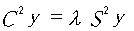
so
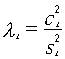
(2.12)from (2.10)
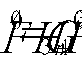
(2.13)Algorithm W.Z
(1)
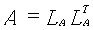
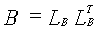
(2) Let
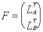
find orthogonal transformation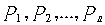
such that(3)Determine let
(4)Reduce to bidiagonal form
(5)find the SVD of to obtain singular values then the eigenvalues given by (2.13) .
step (1) -(4) needs time.
step (5) need time.
3.1 Decreasing the fill-in in in step(2) of the W.Z algorithm
the in W.Z algorithm is
where “+” indicates a new nonzero element the in W.Z
The modified algorithm
let to get , is designed to annihilate and is to annihilate the remaining elements in the ith column below the diagonal.
so step (2) require .
3.2 Decreasing the fill-in in .
The same we can decrease step (3) from to to get the tridiagonal matrix
Created by: Wen-Yan Tian
Date: Apr 17 1997